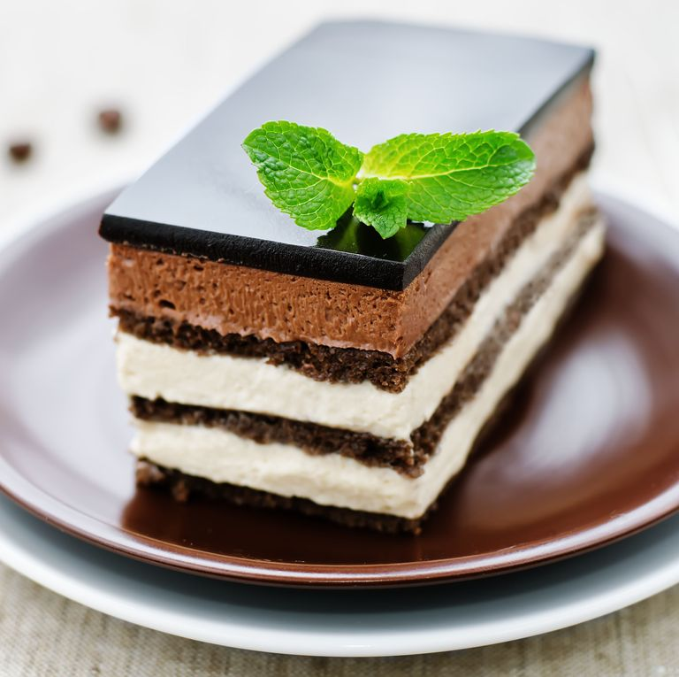
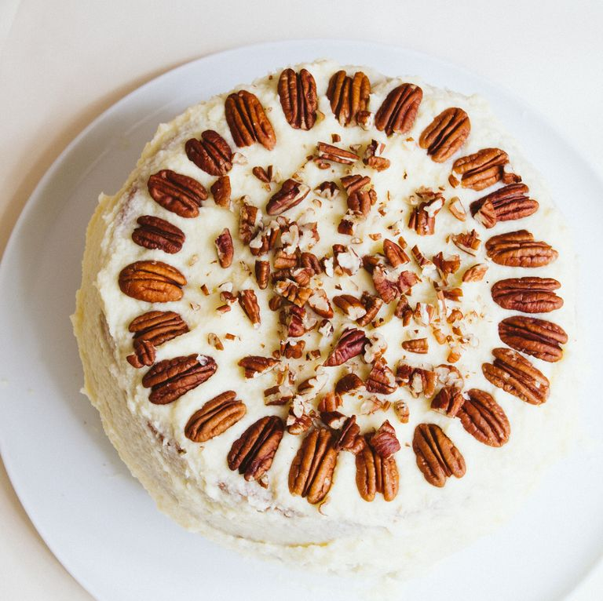

Golden Bakery
Devil Opera Fruit Hummingbird Genoise Red Velvet
Devil's Food Cake

Made "devilish" by the addition of chocolate in the form of cocoa powder. Extra baking soda causes the crumb to have more air bubbles, giving it a light and airy texture. This rich cake is frosted with either chocolate frosting or buttercream.
Opera Cake

The history of the opera cake is a bit muddled. One thing we do know, however, is that it boasts thin layers of coffee-soaked almond cake sandwiched between layers of espresso-flavored buttercream and bittersweet chocolate ganache. Light but rich, this pastry is a real showstopper.
Fruit Cake

Universally loathed and joked about, this holiday staple is full of dried or candied fruit, nuts, and spices. Once cooked, the cake is wrapped and soaked in a spirit like brandy or rum. Despite the jokes, we think it's delicious. The right recipe might win you over too.
Hummingbird Cake

The classic Southern oil cake is flavored with bananas, pineapple, pecans, and warm spices, and topped with a tangy cream cheese frosting. Created in Jamaica and originally called "Doctor Bird Cake," this confection made its way Stateside sometime in the 1960s.
Genoise Cake

Genoise is what a sponge cake is called in Italy or France. In this cake, egg yolks, egg whites, and sugar are beaten together until mousse-like. Next, flour and either oil or butter are folded in. This type of cake is more moist and tender than its sponge cake cousin.
Red Velvet Cake

This is a true favorite and classic, especially in the South. Made with either butter or oil, red velvet cake's color traditionally comes from the reaction of buttermilk and cocoa powder. Modern versions often achieve this hue by using red food coloring, or in the case of the raspberry velvet cake, shown here, pink.